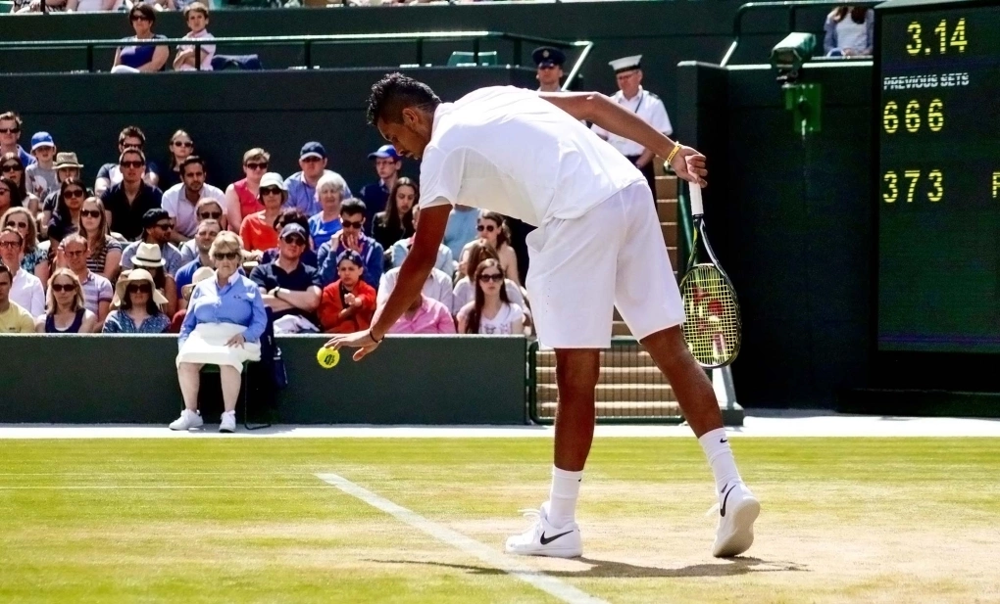

(Vnexpress) - Cú giao bóng dưới tay thường bị xem là "tiểu xảo" trong tennis, nhưng làng banh nỉ đang thay đổi cách nhìn về chiêu thức này.
Một trong nhiều nét chấm phá của mùa đất nện năm nay là những cú giao bóng dưới tay, khi các tay vợt trả giao ngày càng có xu hướng lùi sâu trả giao. Đứng trước cú giao bóng để kết thúc trận đấu ở tứ kết Barcelona Mở rộng tháng trước, Nuno Borges chọn một phương án đầy táo bạo. Tay vợt Bồ Đào Nha giao bóng dưới tay ở điểm quyết định, tạo ra cú ace khiến Tomas Martin Etcheverry hoàn toàn sững sờ. Bóng rơi ngắn, Etcheverry vội vàng lao lên nhưng không kịp. Trận đấu khép lại với tỷ số 6-3, 7-6 nghiêng về Borges.
Nhưng điểm số ấy không được đón nhận như một pha xử lý sáng tạo. Khi hai tay vợt bắt tay trên lưới, Etcheverry ngoảnh mặt đi, trong khi không ít khán giả tại Barcelona la ó người thắng cuộc. Với họ, Borges đã phạm một "tội" khó tha: thắng bằng cú giao bóng dưới tay.
Phản ứng đó cho thấy cú giao bóng dưới tay vẫn là một trong những pha bóng gây tranh cãi nhất tennis, nhưng chỉ vì những lý do ngày càng lỗi thời.
Ở trường hợp của Borges, anh bị chuột rút gặp vấn đề ở một bên chân. Borges không thể, hoặc không muốn, bật nhảy và phát lực theo kiểu giao bóng thông thường. Nhưng thật ra, anh cũng chẳng cần lý do để biện minh cho lựa chọn của bản thân.
Trong quần vợt hiện đại, sức mạnh của những cú giao bóng khiến rất nhiều tay vợt trả giao đứng lùi xa sau vạch cuối sân. Khi đó, giao bóng dưới tay trở thành đòn đánh bất ngờ hoàn hảo, đặc biệt với những người vốn sở hữu cú giao mạnh. Alexander Bublik là ví dụ tiêu biểu, giống như một bậc thầy của kỹ xảo này.
Giao bóng kiểu đó làm tâm trí đối thủ trở nên lúng túng hơn. Họ không thể yên tâm đứng sâu chờ bóng lao tới. Và trong trường hợp Borges, đấy còn là lựa chọn lý tưởng cho một tay vợt không thể giao bóng hết sức theo cách truyền thống.
Chỉ trích cú giao bóng dưới tay chẳng khác nào trách Carlos Alcaraz bỏ nhỏ trong lúc đối thủ đang chờ tay vợt Tây Ban nha "nã đại bạc" từ phía thuận tay. Yếu tố bất ngờ chính là linh hồn của pha bóng.
Trong quá khứ, giao bóng dưới tay thường bị coi là cú đánh dành cho người chơi phong trào, những người không biết giao bóng đúng cách. Nhưng đến cuối thập niên 2010, kiểu giao này bắt đầu trở thành xu hướng thời thượng, một phần vì nhiều tay vợt như Rafael Nadal thường đứng rất xa để trả giao, đặc biệt trên sân đất nện.
Daniil Medvedev thậm chí đẩy điều đó lên cực đoan với vị trí trả giao lùi sâu đến mức đối thủ phải tập giao bóng dưới tay trước khi gặp anh.
"Gặp Daniil, nếu giao mạnh bình thường, mọi thứ khá khó khăn vì anh ấy có quá nhiều thời gian đọc cú giao của bạn. Trước trận, tôi đã tập giao bóng dưới tay", Alexandre Muller kể lại khi đấu Medvedev ở Wimbledon. "Tôi thử hai lần vì anh ấy đứng quá xa. Đó là lần đầu tiên trong đời tôi làm vậy. Tôi thắng cả hai điểm đó".
Cú giao bóng dưới tay vì thế không phải hành động thiếu tôn trọng đối phương. Đấy là ý đồ rõ ràng, là lời nhắc rằng trong tennis, chiến thuật không chỉ nằm ở việc đánh bóng thật mạnh, mà còn ở chỗ khiến đối thủ phải tự hỏi: đường bóng tiếp theo sẽ như thế nào?
Những tay vợt như Bublik hay Nick Kyrgios có lợi thế đặc biệt khi đối thủ hầu như lúc nào cũng phải lùi sâu để trả giao, bởi cả hai sở hữu cú giao bóng vô cùng uy lực. Họ cũng đủ khéo léo để thực hiện cú giao dưới tay đúng điểm rơi, giấu tay kín, rồi khai thác chính vị trí lùi sâu của đồng nghiệp để tạo ưu thế cho mình.

Kyrgios chuẩn bị giao bóng, trong một trận đấu tại Wimbledon - nơi anh từng vào chung kết năm 2022.
"Chuyện đó không nên bị làm quá lên. Đấy chỉ là cú đánh hơi vớ vẩn chút nhằm đem lại lợi thế cho tay vợt", Bublik nói sau khi giao bóng dưới tay sáu lần trong một game ở trận gặp Giovanni Mpetshi Perricard. "Khả năng bạn thực hiện hoàn hảo chiêu thức đó chỉ khoảng một đến hai lần sau 10 lần thử. Nếu không làm tốt, bạn trao cho đối thủ một tình huống dễ dàng. Dù sao, đấy cũng chỉ là một loại cú đánh khác thôi. Chúng ta không chê bai về những cú bỏ nhỏ, nhưng lại cứ bàn tán mãi về giao bóng dưới tay".
Là người thường xuyên dùng cú đánh này, việc Bublik lên tiếng bảo vệ cũng dễ hiểu. Nhưng phía bên kia lưới, đối thủ của anh nghĩ gì?
"Tôi chưa bao giờ hiểu vì sao mọi người la ó giao bóng dưới tay, vì đấy là một phần của trận đấu", Jack Draper nói tại Roland Garros 2025. "Nếu bạn có cú đánh đó trong kho vũ khí, khi nhiều tay vợt đứng lùi rất sâu để trả giao, đấy là một lựa chọn tốt".
Medvedev, người thường là nạn nhân của kiểu giao bóng "dị" này, từng nói tại Wimbledon 2024 rằng đôi khi anh cũng sử dụng kỹ thuật đó: "Tôi nghĩ cú giao bóng ấy nên được đánh giá công bằng hơn. Theo tôi, chiến thuật này có giới hạn, và đó là lý do không ai dùng quá nhiều. Gây bất ngờ một, hai lần thì được. Nhưng nếu làm đến lần thứ ba, tôi nghĩ sẽ khó ghi điểm".
Người từng thắng trận bằng giao bóng dưới tay như Borges là Pablo Cuevas, "ông vua" của những cú đánh biểu diễn một thời của tennis. Ở một lần trả lời phỏng vấn về những cú đánh yêu thích trong sự nghiệp, Cuevas nhắc tới pha giao bóng hai ở match-point chung kết Brazil Mở rộng 2017, giúp anh thắng Albert Ramos-Vinolas.
"Tôi không dùng nó nhiều", Cuevas nói. "Nhưng nếu ai đó làm vậy với tôi, tôi cũng không thấy khó chịu, vì tôi hiểu có những tay vợt đứng trả giao rất xa, và bạn chỉ đang cố làm khó đối thủ một chút thôi. Tôi hoàn toàn không nghĩ đó là gian lận. Tôi xem đó là chiến thuật".
Với Cuevas, cú đánh ấy đến từ nỗi lo thua điểm. Anh không muốn mắc lỗi kép thứ 13. Còn cú giao bóng dưới tay nổi tiếng nhất lịch sử có lẽ thuộc về Michael Chang, khi chàng trai 17 tuổi thực hiện kiểu giao đó trong trận thắng gây sốc trước Ivan Lendl tại Roland Garros 1989.
Cú giao bóng dưới tay không phá luật, không xúc phạm đối thủ và cũng chẳng làm trận đấu xấu đi. Người thực hiện pha bóng đó chắc chắn cũng chẳng phải một kẻ hèn nhát. Kỹ thuật này đơn giản nói rằng: tennis không chỉ là môn của sức mạnh, mà còn là cuộc chơi của trí óc, nhịp điệu và việc tạo ra những khoảnh khắc bất ngờ.
BÌNH LUẬN